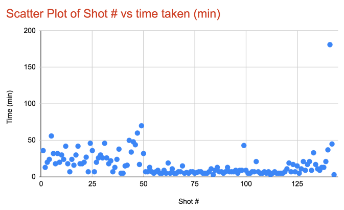

This is a 3-part blog covering how to build a scalable shot-based serverless video encoder in Azure. In Part 1, I explain what AV1 is and where we are in the video encoding space. In part 2, we create a logic app to upload and index the video. In part 3, we’ll need to split the video into its scenes and encode individual scenes. For reference, here are the links to all the parts:
- https://www.singhkays.com/blog/azure-serverless-distributed-video-encoder-av1-part-1/
- https://www.singhkays.com/blog/azure-serverless-distributed-video-encoder-av1-part-2/
- https://www.singhkays.com/blog/azure-serverless-distributed-video-encoder-av1-part-3/
Streaming video takes center stage
Streaming video has now become the main source of content consumption for many consumers. The number of consumers paying for streaming video services has skyrocketed in recent years. A recent survey by Deloitte concluded that for the first time more US consumers pay for streaming video services (69%) than they do for cable or satellite TV (65%). It is not surprising that streaming video has taken over given the excellent ad-free user experience.
The key component to making streaming video possible is the internet bandwidth because the quality of video being streamed is directly proportional to number of bits used to represent the pixels in the video i.e. bitrate. Therefore, a video with a higher resolution (i.e. larger number of pixels) requires a higher bitrate which translates to the user needing more bandwidth to stream the video successfully. To make this business model work without requiring every user to sign up for the highest speed internet plan, streaming video providers rely on video compression codecs such as H.264, VP9, H.265 etc. These codecs allow delivery of physical media (Blu-ray) like quality when viewed at normal TV -> couch distances for a fraction of the bitrate.
There’s a problem in paradise
The video compression space is always evolving due to the constraints placed by available internet bandwidth especially in mobile scenarios. The most popular video codec in use today is AVC/H.264 codec which is owned by the Motion Picture Experts Group (MPEG). Before a content creator can distribute video in H.264 format It’s successor H.265 was approved in 2013 and expected to offer about 25% to 50% bitrate savings for the same quality. However, H.265 has not been able to capture the market in the same way H.264 did due to its patent licensing fees which can be as high as $25 million annually. Youtube is one of the most notable streaming properties to skip H.265 adoption and rely on Google’s own VP9 codec. When one of the top video streaming sites doesn’t adopt the latest and greatest, you know there’s a problem!
A problem is just an opportunity!
In 2015, a bunch of internet, content creator and browser companies realized this problem and formed the Alliance for Open Media (AOMedia) which features some of the biggest names including Amazon, Apple, ARM, Cisco, Facebook, Google, IBM, Intel, Microsoft, Netflix and NVIDIA. The first order of business for AOMedia consortium is to deliver a state-of-the-art codec that is also royalty free. AV1, released in 2018 fulfills that vision and promises to deliver 30% better compression than H.265! Youtube has already started testing videos with AV1 through its TestTube page. Netflix has also shown support for AV1 by calling it “our primary next-gen codec”.
AV1 is based largely on Google’s VP9 codec and incorporates tools and technologies from Mozilla’s Daala, Cisco’s Thor, and Google’s VP10 codecs. In its current form, the AV1 encoder is quite slow compared to existing H.265 & H.264 encoders. But there are efforts underway by folks at Mozilla and Xiph to build an AV1 encoder that’s focused purely on speed from scratch – rav1e!
Shots, Shots, Shots!
Until the encoding speed of the AV1 encoders fares better when compared to existing encoders, this proof of concept introduces a potential way to speed up the overall encoding tasks. It does this by splitting the input video into “shots” and is inspired by Netflix’s approach to parallelizing their video encoding process. “Shots” as Netflix describes are – “portions of video with a relatively short duration, coming from the same camera under fairly constant lighting and environment conditions. It captures the same or similar visual content, for example, the face of an actor standing in front of a tree and — most important — it is uniform in its behavior when changing coding parameters."
The solution
Strap in! This is going to be a long one!
TL;DR
To implement this solution, we need an algorithm that splits the input video into shots. Fortunately for us, Microsoft Video Indexer supports this scenario. Before getting started we’ll setup Video Indexer in our subscription. For the rest of the steps, here’s a quick overview of what’s going to happen:

- User uploads an MP4 video file to Azure Blob Storage
- Because of the Azure Event Grid integration with Azure Blob Storage, a file upload event triggers a notification
- The event notification is consumed by the first Logic App. The first step in the Logic App is to upload the video to Microsoft Video Indexer service
- Once the video is indexed, we retrieve the video insights and store it in the “insights” Azure File share
- While the video indexing is happening, we also copy the video file from Azure Blob Storage to the “source” Azure File share where it can be accessed by container instances later
- When the indexing is complete, an “Indexing complete” notification is sent to trigger the second Logic App
- In the second Logic App, the first step is to retrieve the video insights saved earlier
- Next, we use an Azure Function to parse the shots data and create our container instance definitions as well as shots encoding commands for each container instance
- Now we can use the Logic App-Container Instance connector to create container instances based on container instance definitions defined in the last step
- As the container instances finish their respective encoding jobs, they save the output video in the “shots” Azure File share
- Next, we trigger another Azure Function to iterate over the output files and create a ffmpeg concat file
- Once we have a concat file, we create another container instance with ffmpeg installed to execute the concat file
- The output of the preview container instance i.e. all the encoded shots files that are combined to one file is saved in the “output” Azure File share
- The user can then download the encoded file from the “output” Azure File share
User Experience
While building this solution, I wanted to keep the user experience simple. Hence a user needs to take only these steps:
- Upload an MP4 video file to a specified Azure Blob Storage Account
- Download the encoded file from the “output” Azure File share
Results
Below are the results of the speedup I was able to achieve using this solution. Continue on to Parts 2 & 3 to see how to build this solution.
Test setup
- To obtain these results I used the following docker image with a build of libaom AV1 https://hub.docker.com/r/offbytwo/ffmpeg
- Parallelism - 50x i.e. only 50 shots were encoding concurrently at any given time
Here is the total time it took to run the pipeline in each of the cases. If you look at the absolute total time, the improvement is ~7x with a 50x parallelisation factor. With a higher number of concurrent encodes, this number would be greater. However, in the case of shot-based encoding solution, there’s a big caveat below that needs to be considered.
Absolute numbers
| Encoder type | Time |
|---|---|
| Shot-based encoder (50x parallel) | ~3 hrs* |
| Linear encoding | 21.8 hrs |
* - The times you see above are the total times it took for the pipeline to complete. In the shot-based solution the longest time it took to encode was 3 hours for shot 141 which were the credits. The total length of this shot was 1 minute 17 seconds. If you ignore this scene, then majority of the shots completed in less than 45 minutes
Percentiles
I’ve also plotted calculated the time taken to encode at various percentiles as shows below so we get a better idea of what the speedup is at these different data points. One example from the below data is the median (P50) speedup is 145x and at P99 the speedup is 20x!
| Percentile | Time (minutes) | Speedup |
|---|---|---|
| 50 | 9 | 145x |
| 67 | 18 | 73x |
| 90 | 37 | 35x |
| 95 | 46 | 29x |
| 99 | 66 | 20x |
| 100 | 181 | 7x |
Scatter Plot of time distribution
Here is a scatter plot distribution of shot # vs the time taken to encode.

NOTE: Because of the 50X parallelisation factor, majority shots #s < 50, spent around 10 minutes in queue waiting to begin encoding. The time here represents the total of time spent in queue + encoding time. If we increased the parallelisation factor and reduced the time spent in queue, then the distribution of time taken for shot #s < 50 would resemble those with shot # > 50.
To view the details and timecodes of the shots, view this JSON file
End of Part 1
This is the end of Part 1. In Part 2, I will walk through step by step on how to implement this solution.
AV1 resources
- AV1 Resource Central: Videos, Tools, Presentations, Comparisons, Research Papers, Encoders, Decoders
- It’s time to replace GIFs with AV1 video!
Contact
Reach out if you have any questions! Feel free to follow me on
- Twitter - @singhkays
- LinkedIn - https://www.linkedin.com/in/singhkays/